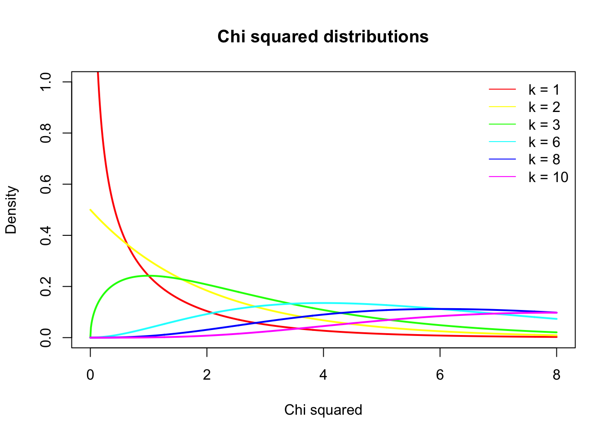

chi = seq(0,8,.01)
df = c(1,2,3,6,8,10)
col = rainbow(n = length(df))
plot( chi, dchisq(chi, df[1]), lwd = 2, col = col[1], type="l",
main = "Chi squared distributions",
ylab = "Density",
ylim = c(0,1),
xlab = "Chi squared")
lines(chi, dchisq(chi, df[2]), lwd = 2, col = col[2], type="l")
lines(chi, dchisq(chi, df[3]), lwd = 2, col = col[3], type="l")
lines(chi, dchisq(chi, df[4]), lwd = 2, col = col[4], type="l")
lines(chi, dchisq(chi, df[5]), lwd = 2, col = col[5], type="l")
lines(chi, dchisq(chi, df[6]), lwd = 2, col = col[6], type="l")
legend("topright", legend = paste("k =",df), col = col, lty = 1, bty = "n")